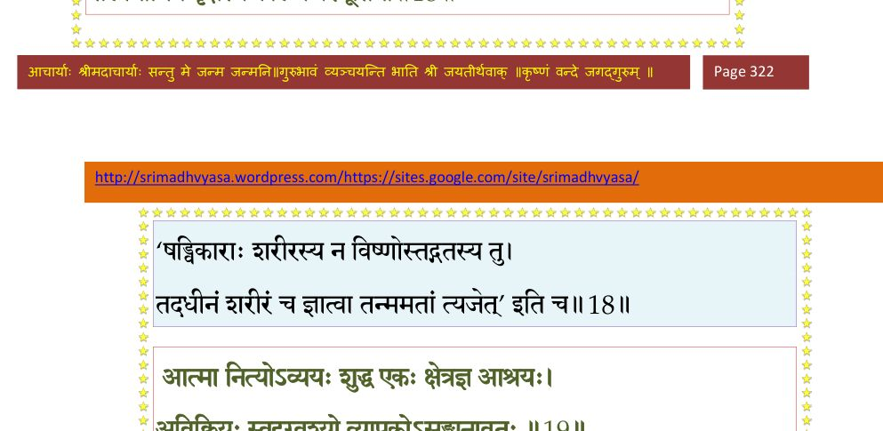
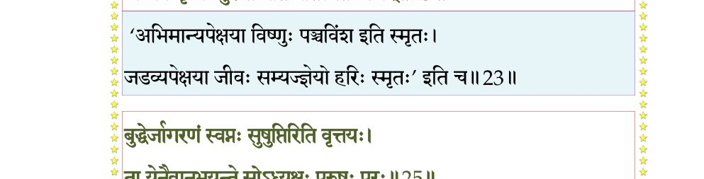
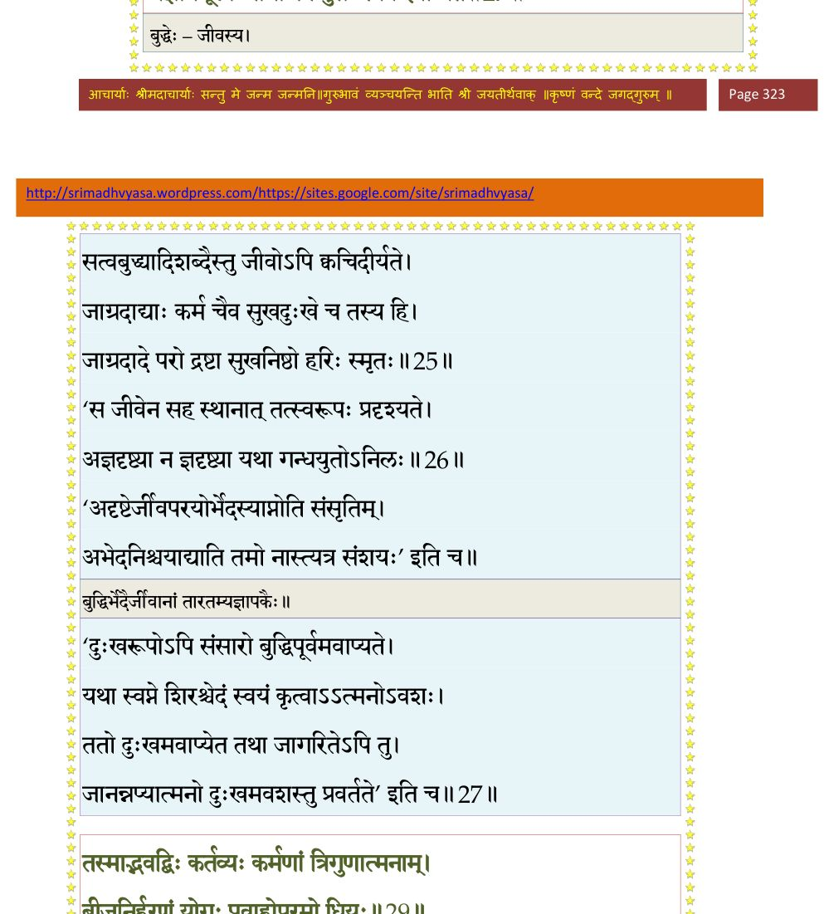
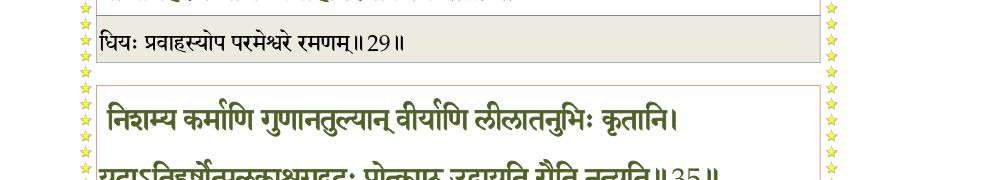
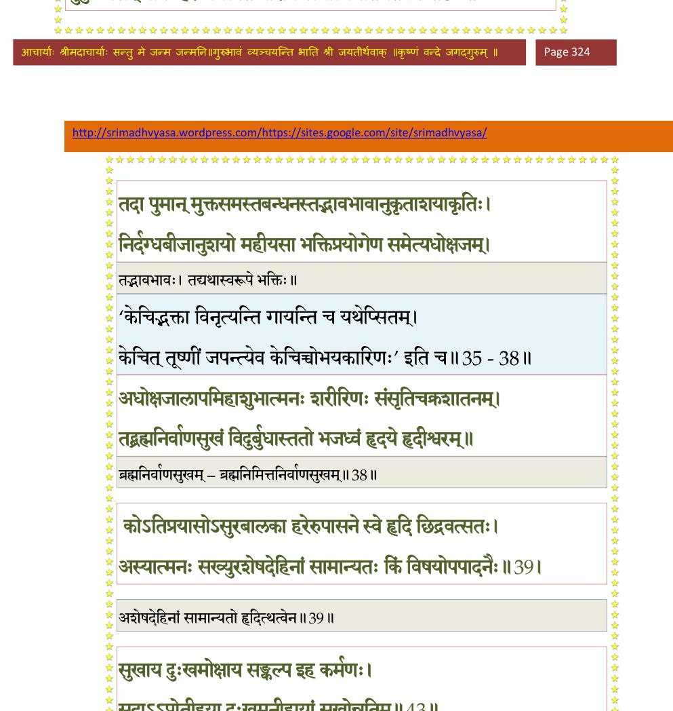
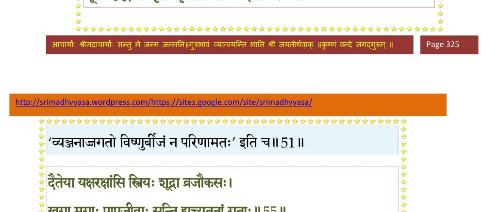
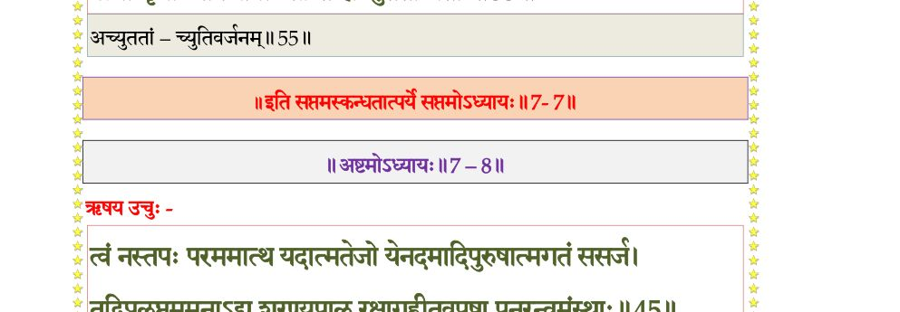

स्कन्ध 7 · अध्याय 7
श्लोक १
नारद उवाच–
एवं दैत्यसुतैः पृष्टो महाभागवतोऽसुरः ।
उवाच स्मयमानस्तान् स्मरन् मदनुशासनम्।। १ ।।
एवं दैत्यसुतैः पृष्टो महाभागवतोऽसुरः ।
उवाच स्मयमानस्तान् स्मरन् मदनुशासनम्।। १ ।।
श्लोक २
प्रह्लाद उवाच–
पितरि प्रस्थितेऽस्माकं तपसे मन्दराचलम् ।
युद्धोद्योगं परं चक्रुर्विबुधा दानवान् प्रति।। २ ।।
पितरि प्रस्थितेऽस्माकं तपसे मन्दराचलम् ।
युद्धोद्योगं परं चक्रुर्विबुधा दानवान् प्रति।। २ ।।
श्लोक ३
पिपीलिकैरहिरिव दिष्ट्या लोकोपतापनः ।
पापेन पापोऽभक्षीति वादिनो वासवादयः।। ३ ।।
पापेन पापोऽभक्षीति वादिनो वासवादयः।। ३ ।।
श्लोक ४
तेषामतिबलोद्योगं निशम्यासुरयूथपाः ।
वध्यमानाः सुरैर्भीताः दुद्रुवः सर्वतो दिशम्।। ४ ।।
वध्यमानाः सुरैर्भीताः दुद्रुवः सर्वतो दिशम्।। ४ ।।
श्लोक ५
कलत्रपुत्रवित्ताप्तान् गृहान् पशुपरिच्छदान् ।
नावेक्षमाणास्त्वरिताः सर्वे प्राणपरीप्सवः।। ५ ।।
नावेक्षमाणास्त्वरिताः सर्वे प्राणपरीप्सवः।। ५ ।।
श्लोक ६
व्यलुम्पन् राजशिबिरममरा जयकाशिनः ।
इन्द्रस्तु राजमहिषीं मातरं मम चाग्रहीत्।। ६ ।।
इन्द्रस्तु राजमहिषीं मातरं मम चाग्रहीत्।। ६ ।।
श्लोक ७
नीयमानां भयोद्विग्नां रुदन्तीं कुररीमिव ।
यदृच्छयाऽऽगतस्तत्र देवर्षिर्ददृशे पथि।। ७ ।।
यदृच्छयाऽऽगतस्तत्र देवर्षिर्ददृशे पथि।। ७ ।।
श्लोक ८
प्राह मैनां सुरपते नेतुमर्हस्यनागसीम् ।
मुञ्च मुञ्च महाभाग सतीं परपरिग्रहम्।। ८ ।।
मुञ्च मुञ्च महाभाग सतीं परपरिग्रहम्।। ८ ।।
श्लोक ९
इन्द्र उवाच–
आस्तेऽस्या जठरे वीर्यमविषह्यं सुरद्विषः ।
आस्यतां यावत् प्रसवं मोक्ष्येऽर्थपदवीं गतः।। ९ ।।
आस्तेऽस्या जठरे वीर्यमविषह्यं सुरद्विषः ।
आस्यतां यावत् प्रसवं मोक्ष्येऽर्थपदवीं गतः।। ९ ।।
श्लोक १०
नारद उवाच–
अयं निष्किल्बिषः साक्षान्महाभागवतो महान् ।
त्वया न प्राप्स्यते संस्थामनन्तानुचरो बली।। १० ।।
अयं निष्किल्बिषः साक्षान्महाभागवतो महान् ।
त्वया न प्राप्स्यते संस्थामनन्तानुचरो बली।। १० ।।
श्लोक ११
इत्युक्तस्तां विहायेन्द्रो देवर्षेर्मानयन् वचः ।
अनन्तप्रियभक्त्यैनां परिक्रम्य दिवं ययौ।। ११ ।।
अनन्तप्रियभक्त्यैनां परिक्रम्य दिवं ययौ।। ११ ।।
श्लोक १२
ततो नो मातरमृषिः समानीय निजाश्रमम् ।
आश्वास्येहोष्यतां भद्रे यावत् ते भर्तुरागमः।। १२ ।।
आश्वास्येहोष्यतां भद्रे यावत् ते भर्तुरागमः।। १२ ।।
श्लोक १३
तथेत्यवात्सीद् देवर्षेरन्ति साऽप्यकुतोभया ।
यावद् दैत्यपतिर्घोरात् तपसो न न्यवर्तत।। १३ ।।
यावद् दैत्यपतिर्घोरात् तपसो न न्यवर्तत।। १३ ।।
श्लोक १४
ऋषिं पर्यचरत् तत्र भक्त्या परमया सती ।
अन्तर्वत्नी स्वगर्भस्य क्षेमायेच्छाप्रसूतये।। १४ ।।
अन्तर्वत्नी स्वगर्भस्य क्षेमायेच्छाप्रसूतये।। १४ ।।
श्लोक १५
ऋषिः कारुणिकस्तस्याः प्रादादुभयमीश्वरः ।
धर्मस्य तत्त्वं ज्ञानं च मामप्युद्दिश्य निर्मलम्।। १५ ।।
धर्मस्य तत्त्वं ज्ञानं च मामप्युद्दिश्य निर्मलम्।। १५ ।।
श्लोक १६
तत् तु कालस्य दीर्घत्वात् स्त्रीत्वान्मातुस्तिरोदधे ।
ऋषिणाऽनुगृहीतं मां नाधुनाप्यजहात् स्मृतिः।। १६ ।।
ऋषिणाऽनुगृहीतं मां नाधुनाप्यजहात् स्मृतिः।। १६ ।।
श्लोक १७
भवतामपि भूयान्मे यदि श्रद्दधते वचः ।
वैशारदी धीः श्रद्धातः स्त्रीबालानां च मे यथा।। १७ ।।
वैशारदी धीः श्रद्धातः स्त्रीबालानां च मे यथा।। १७ ।।
श्लोक १८
जन्माद्याः षडिमे भावा दृष्टा देहस्य नात्मनः ।
फलानामिव वृक्षस्य कालेनेश्वरमूर्तिना।। १८ ।।
फलानामिव वृक्षस्य कालेनेश्वरमूर्तिना।। १८ ।।
भागवततात्पर्यनिर्णय

श्लोक १९
आत्मा नित्योऽव्ययः शुद्ध एकः क्षेत्रज्ञ आश्रयः ।
अविक्रियः स्वदृग् वश्यो व्यापकोऽसङ्ग्यनावृतः।। १९ ।।
अविक्रियः स्वदृग् वश्यो व्यापकोऽसङ्ग्यनावृतः।। १९ ।।
भागवततात्पर्यनिर्णय
श्लोक २०
एतैर्द्वादशभिर्विद्वान् आत्मनो लक्षणैः परैः ।
अहं ममेत्यतद्भावं देहादौ मोहजं त्यजेत्।। २० ।।
अहं ममेत्यतद्भावं देहादौ मोहजं त्यजेत्।। २० ।।
श्लोक २१
हेमं यथा ग्रावसु हेमकारः क्षेत्रेषु योगैस्तदभिज्ञ आप्नुयात् ।
क्षेत्रेषु देहेषु तथाऽऽत्मयोगैरध्यात्मविद् ब्रह्मगतिं लभेत।। २१ ।।
क्षेत्रेषु देहेषु तथाऽऽत्मयोगैरध्यात्मविद् ब्रह्मगतिं लभेत।। २१ ।।
श्लोक २२
अष्टौ प्रकृतयः प्रोक्तास्त्रय एव हि तद्गुणाः ।
विकाराः षोडशाचार्यैः पुमानेकः समन्वयात्।। २२ ।।
विकाराः षोडशाचार्यैः पुमानेकः समन्वयात्।। २२ ।।
भागवततात्पर्यनिर्णय
श्लोक २३
देहस्तु सर्वसङ्घातो जगत् तस्थुरिति द्विधा ।
अत्रैव मृग्यः पुरुषो नेति नेतीत्यतत् त्यजन्।। २३ ।।
अत्रैव मृग्यः पुरुषो नेति नेतीत्यतत् त्यजन्।। २३ ।।
भागवततात्पर्यनिर्णय

श्लोक २४
अन्वयव्यतिरेकेण विवेकेनागतात्मना ।
सर्गस्थानसमाम्नायैर्विमृशद्भिरसत्वरैः।। २४ ।।
सर्गस्थानसमाम्नायैर्विमृशद्भिरसत्वरैः।। २४ ।।
श्लोक २५
बुद्धेर्जागरणं स्वप्नः सुषुप्तिरिति वृत्तयः ।
ता येनैवानुभूयन्ते सोऽध्यक्षः पुरुषः परः।। २५ ।।
ता येनैवानुभूयन्ते सोऽध्यक्षः पुरुषः परः।। २५ ।।
भागवततात्पर्यनिर्णय
श्लोक २६
एभिस्त्रिवर्णैः पर्यस्तैर्बुद्धिभेदैः क्रियोद्भवैः ।
सरूपमात्मनो धत्ते गन्धैर्वायुरिवान्वयात्।। २६ ।।
सरूपमात्मनो धत्ते गन्धैर्वायुरिवान्वयात्।। २६ ।।
भागवततात्पर्यनिर्णय
श्लोक २७
एतद्द्वारो हि संसारो गुणकर्मनिबन्धनः ।
अज्ञानमूलोऽपार्थोऽपि पुंसः स्वप्न इवाप्यते।। २७ ।।
अज्ञानमूलोऽपार्थोऽपि पुंसः स्वप्न इवाप्यते।। २७ ।।
भागवततात्पर्यनिर्णय

श्लोक २८
मनोमयत्वात् सर्वार्थाः स्वप्नजागरयोः समाः ।
दृष्टानर्थानपि ध्यातुः शोकमोहभयप्रदाः।। २८ ।।
दृष्टानर्थानपि ध्यातुः शोकमोहभयप्रदाः।। २८ ।।
श्लोक २९
तस्माद् भवद्भिः कर्तव्यः कर्मणां त्रिगुणात्मनाम् ।
बीजनिर्हरणे योगः प्रवाहोपरमो धियः।। २९ ।।
बीजनिर्हरणे योगः प्रवाहोपरमो धियः।। २९ ।।
भागवततात्पर्यनिर्णय

श्लोक ३०
तत्रोपायसहस्राणामयं भगवतोदितः ।
यदीश्वरे भगवति भक्तिः स्यान्नान्यथा रतिः।। ३० ।।
यदीश्वरे भगवति भक्तिः स्यान्नान्यथा रतिः।। ३० ।।
श्लोक ३१
गुरुशुश्रूषया भक्त्या सर्वलाभार्पणेन च ।
सङ्गेन साधुभक्तानामीश्वराराधनेन च।। ३१ ।।
सङ्गेन साधुभक्तानामीश्वराराधनेन च।। ३१ ।।
श्लोक ३२
श्रद्धया तत्कथायां च कीर्तनैर्गुणकर्मणाम् ।
तत्पदाम्बुरुहध्यानात् तल्लिङ्गेक्षार्हणादिभिः।। ३२ ।।
तत्पदाम्बुरुहध्यानात् तल्लिङ्गेक्षार्हणादिभिः।। ३२ ।।
श्लोक ३३
हरिः सर्वेषु भूतेषु भगवानास्त ईश्वरः ।
इति भूतानि मनसा कामैस्तैः साधु मानयेत्।। ३३ ।।
इति भूतानि मनसा कामैस्तैः साधु मानयेत्।। ३३ ।।
श्लोक ३४
एवं निर्जितषड्वर्गैः क्रियते भक्तिरीश्वरे ।
वासुदेवे भगवति यया संलभते रतिम्।। ३४ ।।
वासुदेवे भगवति यया संलभते रतिम्।। ३४ ।।
श्लोक ३५
निशम्य कर्माणि गुणानतुल्यान् वीर्याणि लीलातनुभिः कृतानि ।
यदाऽऽतिहर्षोत्पुलकाश्रुगद्गदः प्रोत्कण्ठ उद्गायति रौति नृत्यति।।३५।।
यदाऽऽतिहर्षोत्पुलकाश्रुगद्गदः प्रोत्कण्ठ उद्गायति रौति नृत्यति।।३५।।
भागवततात्पर्यनिर्णय
श्लोक ३६
यदा ग्रहग्रस्त इव क्वचिद्धसत्याक्रन्दते ध्यायति वन्दते जनम् ।
मुहुः श्वसन् वक्ति हरे जगत्पते नारायणेत्यात्मगतिर्गतत्रपः।। ३६ ।।
मुहुः श्वसन् वक्ति हरे जगत्पते नारायणेत्यात्मगतिर्गतत्रपः।। ३६ ।।
भागवततात्पर्यनिर्णय

श्लोक ३७
तदा पुमान् मुक्तसमस्तबन्धनस्तद्भावभावानुकृताशयाकृतिः ।
निर्दग्धबीजानुशयो महीयसा भक्तिप्रयोगेण समेत्यधोक्षजम्।। ३७ ।।
निर्दग्धबीजानुशयो महीयसा भक्तिप्रयोगेण समेत्यधोक्षजम्।। ३७ ।।
श्लोक ३८
अधोक्षजालापमिहाशुभात्मनः शरीरिणः संसृतिचक्रशातनम् ।
तद् ब्रह्मनिर्वाणसुखं विदुर्बुधास्ततो भजध्वं हृदये हृदीश्वरम्।। ३८ ।।
तद् ब्रह्मनिर्वाणसुखं विदुर्बुधास्ततो भजध्वं हृदये हृदीश्वरम्।। ३८ ।।
श्लोक ४१
कोऽतिप्रयासोऽसुरबालका हरेरुपासने स्वे हृदि छिद्रवत् सतः ।
अस्यात्मनः सख्युरशेषदेहिनां सामान्यतः किं विषयोपपादनैः ।। ३९
रायः कलत्रं पशवः सुतादयो गृहा मही कुञ्जरकोशभूतयः ।
सर्वार्थकामाः क्षणभङ्गुरायुषः कुर्वन्ति मर्त्यस्य कियत् प्रियं चलाः।।
एवं हि लोकाः क्रतुभिः कृता अमी क्षयिष्णवः सातिशया न निर्मलाः ।
तस्माददृष्टश्रुतदूषणं परं भक्त्यैकमीशं भजतात्मलब्धये।। ४१ ।।
अस्यात्मनः सख्युरशेषदेहिनां सामान्यतः किं विषयोपपादनैः ।। ३९
रायः कलत्रं पशवः सुतादयो गृहा मही कुञ्जरकोशभूतयः ।
सर्वार्थकामाः क्षणभङ्गुरायुषः कुर्वन्ति मर्त्यस्य कियत् प्रियं चलाः।।
एवं हि लोकाः क्रतुभिः कृता अमी क्षयिष्णवः सातिशया न निर्मलाः ।
तस्माददृष्टश्रुतदूषणं परं भक्त्यैकमीशं भजतात्मलब्धये।। ४१ ।।
श्लोक ४२
यदर्थमिह कर्माणि विध्यङ्गान्यसकृन्नरः ।
करोत्यतो विपर्यासममोघं विन्दते फलम्।। ४२ ।।
करोत्यतो विपर्यासममोघं विन्दते फलम्।। ४२ ।।
श्लोक ४३
सुखाय दुःखमोक्षाय संकल्प इह कर्मणः ।
सदाऽऽप्नोतीहया दुःखमनीहायां सुखोन्नतिम्।। ४३ ।।
सदाऽऽप्नोतीहया दुःखमनीहायां सुखोन्नतिम्।। ४३ ।।
भागवततात्पर्यनिर्णय
श्लोक ४४
कामान् कामयतेऽकाम्यान् यदर्थ इह पूरुषः ।
स वै देहस्तु पारक्यो भङ्गुरो यात्युपैति च।। ४४ ।।
स वै देहस्तु पारक्यो भङ्गुरो यात्युपैति च।। ४४ ।।
श्लोक ४५
किमु व्यवहितापत्यदारागारधनादयः ।
राज्यकोशगजामात्यभृत्याप्ता ममतास्पदाः।। ४५ ।।
राज्यकोशगजामात्यभृत्याप्ता ममतास्पदाः।। ४५ ।।
श्लोक ४६
किमेतैरात्मनस्तुच्छैः सह देहेन नश्वरैः ।
अनर्थैरर्थसंकाशैर्नित्यानन्दमहोदधेः।। ४६ ।।
अनर्थैरर्थसंकाशैर्नित्यानन्दमहोदधेः।। ४६ ।।
श्लोक ४७
निरूप्यतामिह स्वार्थः कियान् देहभृतोऽसुराः ।
निषेकादिष्ववस्थासु क्लिश्यमानस्य कर्मभिः।। ४७ ।।
निषेकादिष्ववस्थासु क्लिश्यमानस्य कर्मभिः।। ४७ ।।
श्लोक ४८
कर्माण्यारभते देही देहेनात्मानुवर्तिना ।
कर्मभिस्तनुते देहमुभयं त्वविवेकतः।। ४८ ।।
कर्मभिस्तनुते देहमुभयं त्वविवेकतः।। ४८ ।।
श्लोक ४९
तस्मादर्थाश्च कामाश्च धर्माश्च यदपाश्रयाः ।
भजतानीहयाऽऽत्मानमनीहं हरिमीश्वरम्।। ४९ ।।
भजतानीहयाऽऽत्मानमनीहं हरिमीश्वरम्।। ४९ ।।
भागवततात्पर्यनिर्णय
श्लोक ५०
सर्वेषामपि भूतानां हरिरात्मेश्वरः प्रियः ।
भूतैर्महद्भिः स्वकृतैः कृतानां बीजसञ्झितः।। ५० ।।
भूतैर्महद्भिः स्वकृतैः कृतानां बीजसञ्झितः।। ५० ।।
भागवततात्पर्यनिर्णय

श्लोक ५१
देवोऽसुरो मनुष्यो वा यक्षो गन्धर्व एव च ।
भजन् मुकुन्दचरणं स्वस्तिमान् स्याद् यथा वयम्।। ५१ ।।
भजन् मुकुन्दचरणं स्वस्तिमान् स्याद् यथा वयम्।। ५१ ।।
श्लोक ५२
नालं द्विजत्वं देवत्वमृषित्वं वाऽसुरात्मजाः ।
प्रीणनाय मुकुन्दस्य न वृत्तं न बहुज्ञता।। ५२ ।।
प्रीणनाय मुकुन्दस्य न वृत्तं न बहुज्ञता।। ५२ ।।
श्लोक ५३
न दानं न तपो नेज्या न शौचं न व्रतानि च ।
प्रीयतेऽमलया भक्त्या हरिरन्यद् विडम्बनम्।। ५३ ।।
प्रीयतेऽमलया भक्त्या हरिरन्यद् विडम्बनम्।। ५३ ।।
श्लोक ५४
ततो हरौ भगवति भक्तिं कुरुत दानवाः ।
आत्मौपम्येन सर्वत्र सर्वभूतात्मनीश्वरे।। ५४ ।।
आत्मौपम्येन सर्वत्र सर्वभूतात्मनीश्वरे।। ५४ ।।
श्लोक ५५
दैतेया यक्षरक्षांसि स्त्रियः शूद्रा व्रजौकसः ।
खगा मृगाः पापजीवाः सन्ति ह्यच्युततां गताः।। ५५ ।।
खगा मृगाः पापजीवाः सन्ति ह्यच्युततां गताः।। ५५ ।।
भागवततात्पर्यनिर्णय

श्लोक ५६
एतावानेव लोकेऽस्मिन् पुंसां स्वार्थः परः स्मृतः ।
एकान्तभक्तिर्गोविन्दे यत् सर्वत्र तदीक्षणम्।। ५६ ।।
एकान्तभक्तिर्गोविन्दे यत् सर्वत्र तदीक्षणम्।। ५६ ।।
।। इति श्रीमद्भागवते सप्तमस्कन्धे सप्तमोऽध्यायः ।।